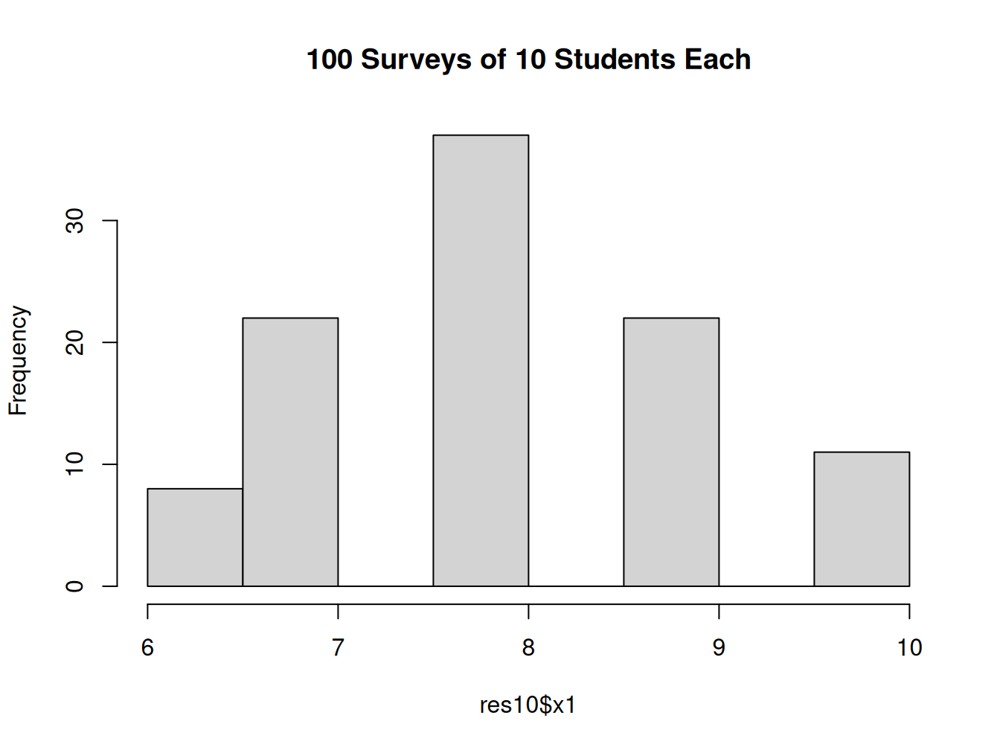
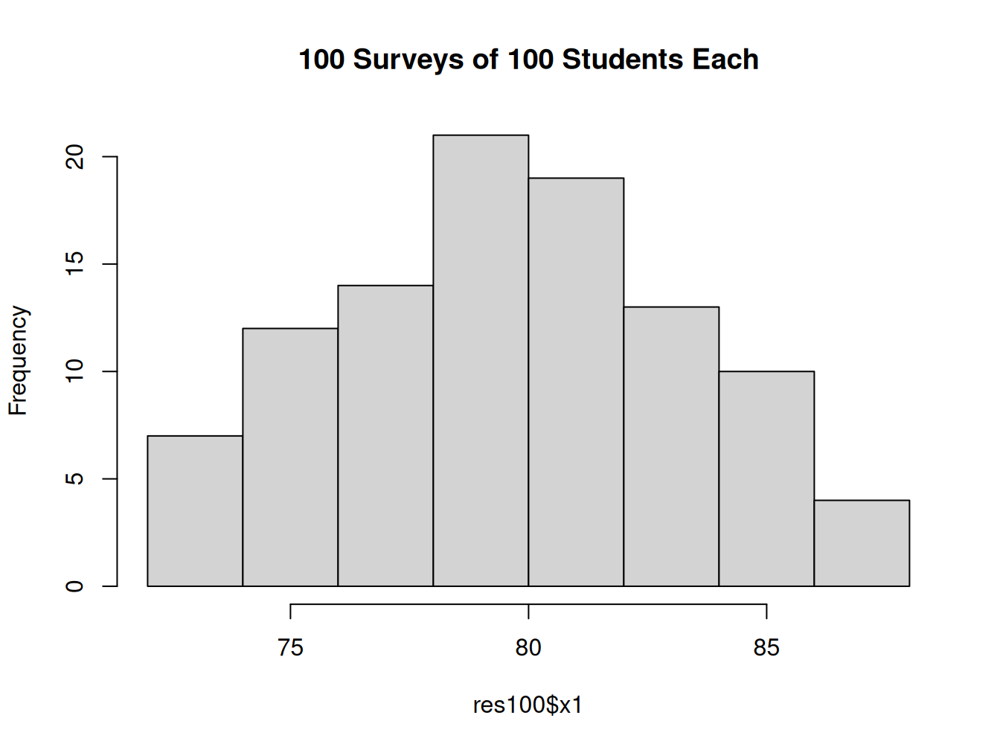
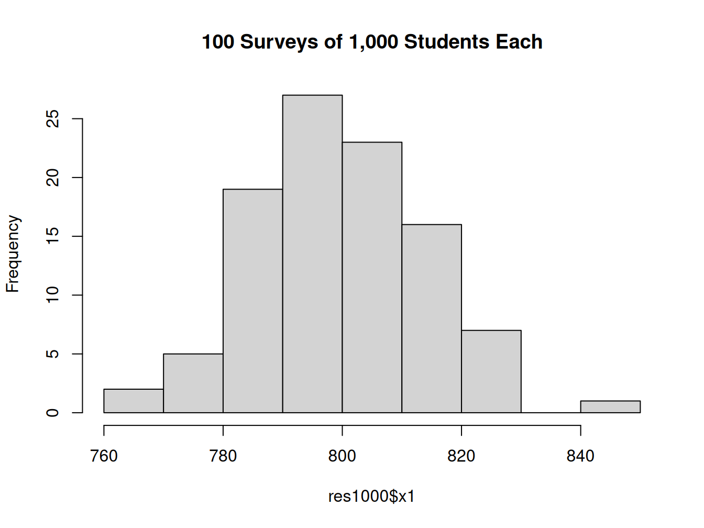
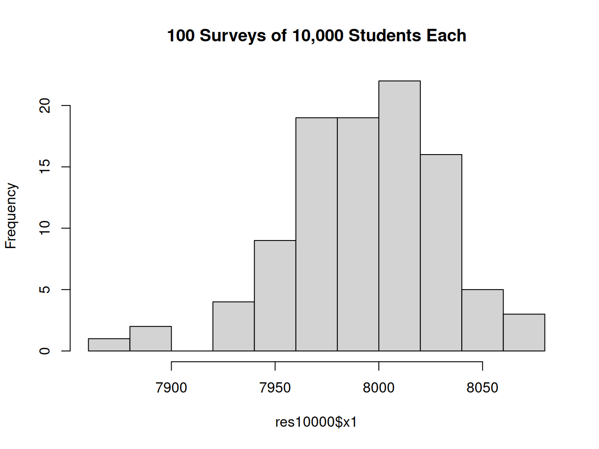
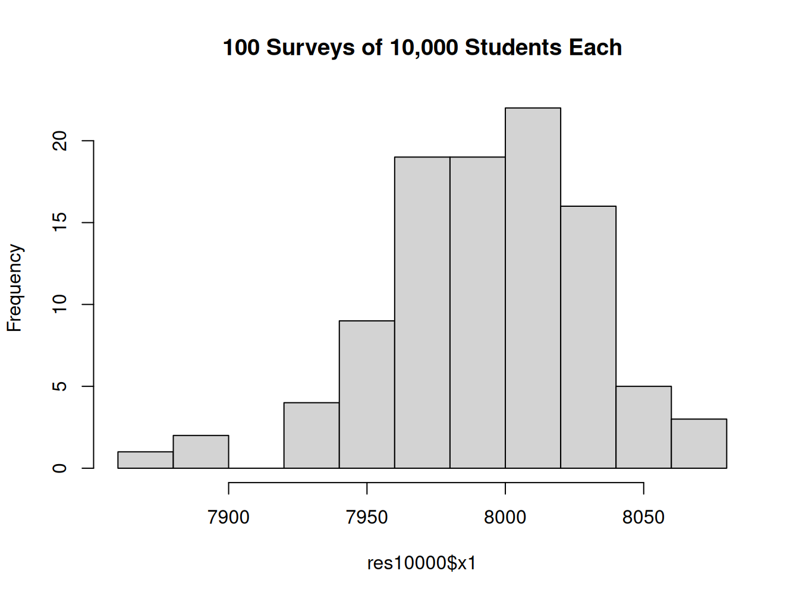
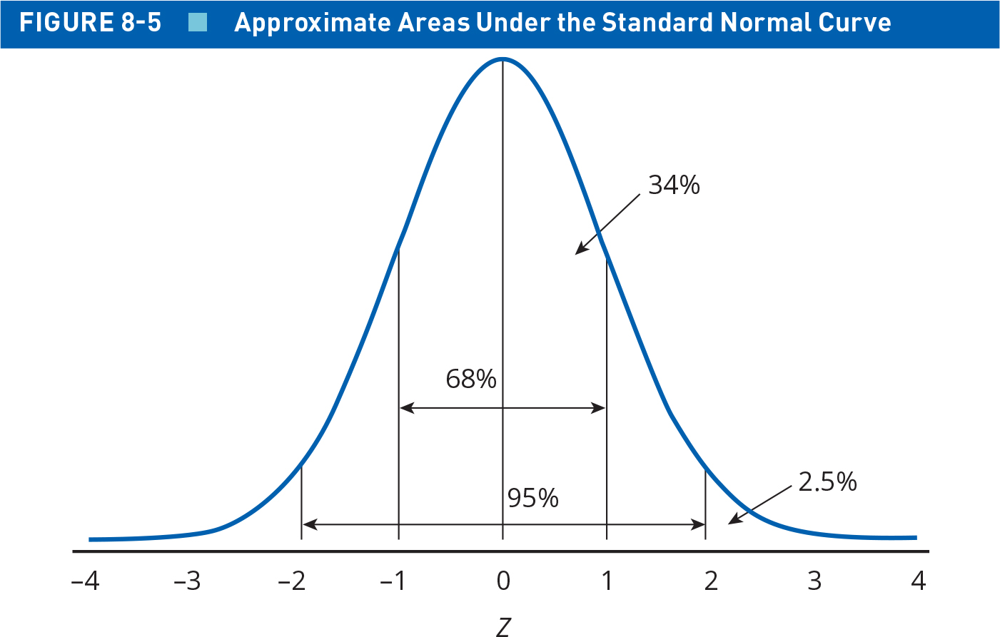
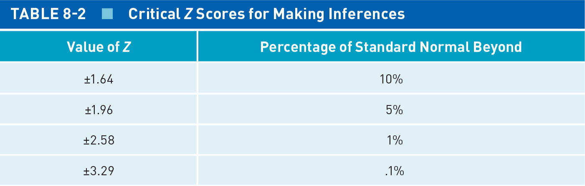

Today’s Agenda
Foundations of Statistical Inference
Justin Leinaweaver (Spring 2026)
Our goal as political scientists is to generate knowledge about the social world using the scientific method
Read slide
All your work so far this semester has been designed around deepening your skills as a quantitative political scientist
Because of this aim we started our semester focused on measurement
We learned to ask key questions about our data, such as:
Where does the data come from?
How was it constructed?
Who designed the measures and for what purposes?
How have they validated their measures?
Our first big takeaway was that only when we understand the validity and reliability of our data should we do anything with it
SLIDE : That took us to level one of doing “statistics”
Defining Statistics: Level 1
Statistics offers tools we can use to summarize data
At its most basic level, statistics is about summary
Don’t underestimate the usefulness of statistical summaries!
We used univariate analyses to identify WHERE the variation is in the world and to describe that variation
We used bivariate analyses to describe the relationship between two variables, and
We used controlled comparisons to develop causal arguments about causes and effects
That’s an impressive amount of value for simply summarizing data!
SLIDE : Our work today takes us to the next level of statistics and serves as the foundation for everything to come the rest of the semester
Defining Statistics: Level 2
Statistics helps us draw inferences from sample to population
Statistics is also a collection of tools meant to help us with the process of inference
Inference is a process by which we study something specific in order to learn something generalizable
Examples:
In survey terms that means asking 1,000 Americans a question while intending to use that to represent the opinion of all Americans
In cross-national analyses, that’s like analyzing 25 civil wars in order to identify the general causes of rebellion
In biology it’s Prof Jansen catching and measuring frogs to make inferences about the levels of pollution in our local waterways
The next big step in your training as a scientist is to learn how to move from a sample estimate to a population parameter
And THAT is what chapter 8 in the textbook is all about
I hope you gave yourself time to read and reflect on the chapter before class
There’s simply no shortcut to understanding, you have to put in the work
SLIDE : Let’s highlight the two big intuitions we’ll need moving forward
Statistical Inference: The Intuitions
\[ \text{Sample Statistic} = \text{Pop. Parameter} \pm \text{Random Sampling Error} \]
The textbook exercises for today were to make sure you can use the formulas to calculate the measures you will need going forward
e.g. standard errors, margins of error, confidence intervals, etc
BUT, before we review those, let’s make sure you have a good grasp of the intuitions underpinning them
REVEAL
Intuition 1: All sample statistics may be thought of as a combination of the true population value plus error
So, you run a survey of 1,000 Americans and calculate their average presidential approval
This sample average represents the actual approval in the population plus (or minus) error
Quick aside, all our work moving forward will be in dealing with this random sampling error
SLIDE : intuition 2
Statistical Inference: The Intuitions
\[ \text{Sample Statistic} = \text{Pop. Parameter} \pm \text{Random Sampling Error} \]
\[ \text{Random Sampling Error} = \frac{\text{Variation component}}{\text{Sample size component}} \]
Intuition 2: Random sampling error is actually a function of two things that can offset each other!
The variation component in the numerator refers to how spread out the values are in a measure (e.g. the standard deviation).
The sample size component in the denominator refers to how many subjects are in your sample
Let’s use computer simulations to visualize EACH of these intuitions
SLIDE : We’ll start with the variation component
Running a Simulation in R
sample(x, size, replace)
“x” lists the options to pick from
“size” is how many to choose
“replace” is whether or not to allow duplicate picks
# One coin flip sample (x = c ("heads" , "tails" ), size = 1 , replace = TRUE )
R has a base function called sample that makes it easy to generate fake data
Let’s use this function to simulate flipping a fair coin
SLIDE : The sample function can do this too!
Running a Simulation in R
sample(x, size, replace)
“x” lists the options to pick from
“size” is how many to choose
“replace” is whether or not to allow duplicate picks
# Ten coin flips sample (x = c ("heads" , "tails" ), size = 10 , replace = TRUE )
[1] "tails" "heads" "heads" "tails" "tails" "heads" "tails" "tails" "tails"
[10] "heads"
Simply increase the “size” argument (and make sure replace = TRUE)
Each time you run this code you should get different results (e.g. simulated randomness)
Everybody with me on this?
Ok, let’s use this to talk about the first source of random sampling error
SLIDE : Different kinds of measures carry different levels of variation
Random Sampling Error: The Variation Component
# Flipping a fair coin sample (x = c (1 , 0 ), size = 20 , replace = TRUE )
[1] 1 0 0 0 1 1 1 0 1 0 1 0 1 0 1 0 0 1 1 1
# Survey question (5 point scale) sample (x = c (1 : 5 ), size = 20 , replace = TRUE )
[1] 2 2 3 3 3 1 2 3 3 4 3 5 3 1 5 2 3 4 1 4
# Country GDP per capita (from $154 to $288k) sample (x = 154 : 288000 , size = 20 , replace = TRUE )
[1] 237092 39091 269151 16250 140168 181040 33119 232312 17803 172928
[11] 176209 186215 237802 172869 105521 169319 140406 233460 285257 283028
Here are three different simulations each meant to produce a different kind of data
For our first measure, we’ll stick with flipping a fair coin
Here I’m using “1” for heads and “0” for tails
The second measure simulates asking 20 people a survey question with five ordinal options
Think of a Likert scale running from “Not at all satisfied” to “Completely satisfied”
The final measure simulates the GDP per capita of 20 different countries
Running from the low end, Burundi at only $154, to the high end where Monaco is at approximately $288k
Does everybody see how each of these measures has been generated?
Which one of these three measures do you think is the hardest to accurately SAMPLE? e.g. design a measure that will capture all of the variation in the world of the question?
Random Sampling Error: The Variation Component
# Flipping a fair coin sample (x = c (1 , 0 ), size = 20 , replace = TRUE ) |> sd ()
# Survey question (5 point scale) sample (x = c (1 : 5 ), size = 20 , replace = TRUE ) |> sd ()
# Country GDP per capita (from $154 to $288k) sample (x = 154 : 288000 , size = 20 , replace = TRUE ) |> sd ()
Here I’m piping our simulated results into the function for calculating the standard deviation
What does this teach us about the first source of error in our measures?
(The larger the variation in your sample, the larger the error in your sample statistic)
A sample drawn from only two options is simply more likely to cover the options
A sample drawn from a range in the hundreds of thousands is always going to carry greater chances of error
SLIDE : Back to the formulas
Statistical Inference: The Intuitions
\[ \text{Sample Statistic} = \text{Pop. Parameter} \pm \text{Random Sampling Error} \]
\[ \text{Random Sampling Error} = \frac{\text{Variation component}}{\text{Sample size component}} \]
So, the variation component of our random error depends on how much your sample can vary
This is why all the statistics you had to calculate today include some version of the standard deviation
Key takeaway: A larger SD means a larger variation component and more random error in your sample
SLIDE : Now let’s talk sample size
Random Sampling Error: Sample Size
Hypothetical “Fact”
80% of college students use social media everyday
In order to examine the effect of increasing sample size on random sampling error, we start with a “fact” and assume it is true.
Here’s a made-up fact!
REMEMBER, our interest here is NOT in testing if the 80% is right
Instead, we want to know how good our stats are at discovering the 80% as right
Does that distinction make sense?
So, let’s also assume that we have designed a valid and reliable survey to measure social media use in college students
Question: “Did you use social media in the last 24 hours? Yes or No”
SLIDE : Now we can use our sample function to run this survey one time
Random Sampling Error: Sample Size
Population Parameter: 80% of college students use social media everyday
# Simulate a survey of ten students sample (x = c (1 , 0 ), size = 10 , replace = TRUE , prob = c (.8 ,.2 ))
To represent the population parameter we add the “prob” argument to the sample function
This lets you specify the probability of each possible answer
Here I am giving “1”, which represents “yes”, an 80% chance of being selected
Everytime we run this line of code we’ll get slightly different results
SLIDE : To make the results easier to interpret let’s sum the “yes” answers
Random Sampling Error: Sample Size
Population Parameter: 80% of college students use social media everyday
# Repeat the simulation sum (sample (x = c (1 , 0 ), size = 10 , replace = TRUE , prob = c (.8 ,.2 )))sum (sample (x = c (1 , 0 ), size = 10 , replace = TRUE , prob = c (.8 ,.2 )))sum (sample (x = c (1 , 0 ), size = 10 , replace = TRUE , prob = c (.8 ,.2 )))sum (sample (x = c (1 , 0 ), size = 10 , replace = TRUE , prob = c (.8 ,.2 )))
Does everybody understand what we’re doing here in this code?
Now remember, we set this up so that 80% is the true population value
Based on these simulation results, what is our best estimate of the proportion of college students who use social media everyday?
(Different results each time, but somewhere between 70% and 100%?)
Let’s extend this logic even further!
SLIDE : Let’s simulate running this survey 100 times
Random Sampling Error: Sample Size

Don’t worry about the code for this
In short, I’m using a for loop to run the sample line of code we all have made 100 times
SO, this histogram shows the results of running our ten student survey 100 times!
Based on these simulation results, what is our best estimate of the proportion of college students who use social media everyday?
(Ten student survey gives us a wide range)
If the random sample was kind to us then the results will approximate a normal curve with a peak around 8 which is the population proportion! (e.g. the actual fact!)
Bottom line is that any single survey of ten people is likely to carry a lot of random error
Random Sampling Error: Sample Size

Now we’re asking 100 students in each survey instead of just 10
What has changed in our results here?
(Ten student survey gave us a wide range)
(100 students has shrunk that down a bit)
Everybody understand how I’m getting the proportion here?
SLIDE : Let’s ask 1,000 students
Random Sampling Error: Sample Size

What is the range of values across these hundred surveys of 1,000 students each?
(Ten student survey gave us a wide range)
(100 students has shrunk that down a bit)
(1k students, even tighter!)
We’re getting closer!
SLIDE : Let’s ask 10,000 students
Random Sampling Error: Sample Size

(Ten student survey gave us a wide range)
(100 students has shrunk that down a bit)
(1k students, even tighter!)
(100k gets really close to actual population parameter!)
Min: 78.76%
Max: 80.74%
Ok, what is the lesson here?
How does sample size contribute to random error?
The bigger the sample, the smaller the error
Makes sense that as you ask more and more of the total population you come closer to the population’s result!
Big sample, more confidence your sample statistic is close to the population parameter
The more samples you take (e.g. surveys you run), the more the sample statistic comes to approximate a normal distribution
Technically, as the number of samples approaches the limit the curve of the estimated means approaches normal.
And THAT is the logic of the central limit theorem
Questions on these two takeaways?
SLIDE : The intuitions again
Statistical Inference: The Intuitions
\[ \text{Sample Statistic} = \text{Pop. Parameter} \pm \text{Random Sampling Error} \]
\[ \text{Random Sampling Error} = \frac{\text{Variation component}}{\text{Sample size component}} \]
What questions do you have about the two sources of random sampling error?
Is everybody clear on how they impact error differently?
SLIDE : The formulas you learned in the chapter take these intuitions into our data analyses
Connecting the Intuitions to the Data
\[ \text{Random Sampling Error} = \frac{\text{Variation component}}{\text{Sample size component}} \]
\[ \text{SE of the mean} (\bar{x}) = \frac{\sigma_x}{\sqrt{n}} \]
\[ \text{SE of a proportion} = \frac{\sqrt{p \times (1-p)}}{\sqrt{n}} \]
What I want you to see is how these two measures of the error come directly from the intuition
When calculating the error around a mean value we need two measures
The POPULATION standard deviation for the variable in question, and
The square root of the sample size
Note that you almost never know the population standard deviation so we typically substitute the sample SD in its place
With large enough samples this won’t cause a problem but you should be aware you are making this assumption
Does everybody see how increasing the size of the SD increases the random sampling error in our measure?
(Bigger numbers in the numerator make for larger values)
And how increasing sample size shrinks the error?
(Bigger numbers in the denominator shrink the value!)
REVEAL : In the case of a proportion, the variation component is a little different
Remember, the sd describes the spread of values around the mean
In a proportion the mean is not a real value, answers are either yes or no (1s and 0s)
This formula says the variation is the product of the proportion and (1 minus the proportion)
Did the reading do a good job explaining that?
To Test: What proportion in a measure (e.g. 25%, 35%, etc) contributes the most error?
And according to the textbook, what do we do with these SEs?
(SLIDE : Calculate confidence intervals!)
Connecting the Intuitions to the Data
\[ \text{Sample Statistic} = \text{Pop. Parameter} \pm \text{Random Sampling Error} \]
\[ \text{95% CI} = \text{Sample Statistic} \pm (1.96 \times \text{Standard Error}) \]
Our SE formulas made the second intuition more concrete
Our CI formula takes us back to the big idea we started with
If you have at least 30 cases in your sample (rule of thumb), then you can calculate a 95% CI with this formula!
The starting intuition tells us that our sample statistic has error around it, and the CI is our attempt to quantify how much error there is
The SE formula is a shortcut that means you don’t actually have to run 10k simulations to measure the error in your estimates
SLIDE : But since we did run those simulations, let’s keep connecting these dots!
Here was our simulated results from running 100 surveys of 10 students each
Remember, the goal was to identify the actual true population parameter
e.g. what proportion of college students use social media everyday
And how did we do?
The mean sample proportion we estimated in this simulation is 80.6% which isn’t bad!
BUT the middle 95% of values in this distribution runs from 60% to 100%
So, we say to the experts that the mean is our best bet, BUT that given the uncertainty in our approach, the true population parameter could lie anywhere along this wide interval
THIS is how you communicate to an expert audience how close you think you actually are to the population parameter
The mean value is a snapshot in the “middle”, but the CI tells us about your confidence in that estimate
SLIDE : Now we move to the much larger sample and…

And how did our confidence change?
The mean sample proportion we estimated in this simulation is 79.9508%
And the middle 95% of values in this distribution runs from 79.11675% to 80.663%
NOW we say to the audience that our best estimate is 80% and we are 95% confident that with repeated experiments the true value will run very close to it!
Everybody with me on why the CI helps us communicate our findings?
Forgive me for this, but I have to give you the following warning
The 95% CI DOES NOT TELL YOU the range of values that contain the true population parameter 95% of the time
The 95% CI tells you the range of values that contain the true population parameter in 95% of repeated samples
In other words, the CI is describing the results you would get if you re-ran your entire experiment over and over again
Run the experiment 100 times, calculate the CI 100 times and 95 of them would contain the true population parameter
Just let this sink in for a sec and then don’t stress it yet.
The formulas you learned and practiced for today enable you to generate CIs WITHOUT having to simulate multiple experiments
The SE gives you a measure of uncertainty in your work
The CI uses the SE to describe a confidence interval
A wide CI means we should not be very confident in the precision of our estimate, a narrow CI means more confidence
Don’t worry if this doesn’t make a ton of sense yet, we’ll keep hitting these ideas over and over
NOTES for you: Chapter does way more, but this feels like a good selection of points to hit
SLIDE : Let’s review your assignments for today to make sure you can use the formulas
Pollock & Edwards (2026) Ch 8
\[ \text{SE of a proportion} = \frac{\sqrt{p \times (1-p)}}{\sqrt{n}} \]
\[ \text{95% CI} = \text{Sample Statistic} \pm (1.96 \times \text{Standard Error}) \]
Exercise 1
SE = 0.036
CI = [0.13, 0.27]
SE = 0.050
CI = [0.37, 0.57]
SE = 0.033
CI = [0.33, 0.47]
Did everybody get these results?
SLIDE : Code to get these results
\[ \text{SE of a proportion} = \frac{\sqrt{p \times (1-p)}}{\sqrt{n}} \]
\[ \text{95% CI} = \text{Sample Statistic} \pm (1.96 \times \text{Standard Error}) \]
# A <- sqrt (.2 * .8 ) / sqrt (121 )2 - 2 * se# B <- sqrt (0.47 * 0.53 ) / sqrt (100 )47 - 2 * se# C <- sqrt (0.4 * 0.6 ) / sqrt (225 )4 - 2 * se
Note that this exercise asks us to use the +-2 shortcut for CIs instead of the 1.96 value
Did everybody get these approximate results (depending on your rounding)?
This +-2 shortcut is fine in many cases, but this gives us a good chance to talk about the 1.96 in the CI formula


This normal curve is labelled using z-scores
BUT as you saw in the chapter a z-score is simply a value that has been centered and scaled by the standard deviation
The zero here is the average for some statistics and each estimate can be plotted by how far from the average it is
These distances are scaled as SDs so a “1” is 1 SD above the average
Make sense?
Shifting to our CI math just means replacing SD with SE
The zero here now represents your sample statistic (e.g. the group mean)
And the z-scores are how many SEs the true parameter could be away from your best estimate
When you give someone a 95% CI you’re saying the true parameter value could be anywhere in the range of about two SEs above and below your sample statistic
Assuming your sample size is large enough, then:
This means you can give someone any size CI you want
SO, to be clear, a CI gives a range of plausible values around your estimate
The size of that range depends on the % CI you want to generate
Does that make sense?
SLIDE : Ok, Exercise 2
Pollock & Edwards (2026) Ch 8
\[ \text{Sample Std Dev} (s_x) = \sqrt{\frac{\Sigma (x_i - \bar{x})^2}{n-1}} \]
\[ \text{SE of the mean} (\bar{x}) = \frac{\sigma_x}{\sqrt{n}} \]
\[ \text{95% CI} = \text{Sample Statistic} \pm (1.96 \times \text{Standard Error}) \]
Exercise 2
A. SE = 0.40
B. CI = [1.14, 2.73]
Did everybody get these results?
SLIDE : Code to get these results
Pollock & Edwards (2026) Ch 8
\[ \text{SE of the mean} (\bar{x}) = \frac{\sigma_x}{\sqrt{n}} \]
\[ \text{95% CI} = \text{Sample Statistic} \pm (1.96 \times \text{Standard Error}) \]
Exercise 2
# The Data <- c (0 , 0 , 0 , 1 , 1 , 1 , 2 , 2 , 2 , 2 , 2 , 3 , 4 , 4 , 5 )# The SE <- sd (x1) / sqrt (15 )# The 95% CI (ballpark) mean (x1) - 2 * se
How are we doing?
SLIDE : Question 3
Pollock & Edwards (2026) Ch 8
\[ \text{SE of the mean} (\bar{x}) = \frac{\sigma_x}{\sqrt{n}} \]
\[ \text{95% CI} = \text{Sample Statistic} \pm (1.96 \times \text{Standard Error}) \]
Exercise 3
A. SE = 0.07
B. CI = [1.67, 1.95]
Did everybody get these results?
SLIDE : Code to get these results
Pollock & Edwards (2026) Ch 8
\[ \text{SE of the mean} (\bar{x}) = \frac{\sigma_x}{\sqrt{n}} \]
\[ \text{95% CI} = \text{Sample Statistic} \pm (1.96 \times \text{Standard Error}) \]
Exercise 3
# The SE <- 1.98 / sqrt (816 )# The 95% CI (ballpark) 1.81 - 2 * se
ANES (2020) Practice Exercises
What proportion of Americans get at least some of their campaign news using the newspaper (campaign.news.papers)? Calculate the proportion who “1. Mentioned” newspapers in their survey and provide a 95% CI around that statistic.
What is the mean level of support for President Trump in the 2020 ANES survey (ft.trump.post)? Calculate the mean and provide a 95% CI around that statistic.
ANES (2020) Practice Exercises
# Campaign News in Newspapers # Proportions per category proportions (table (anes$ campaign.news.papers))
0. Not mentioned 1. Mentioned
0.59421 0.40579
# Calculate SE of a proportion <- sqrt (0.59 * 0.41 ) / sqrt (8152 )# Calculate CI 41 - 1.96 * se
ANES (2020) Practice Exercises
# Feeling Thermometer: Trump # Mean value mean (anes$ ft.trump.post, na.rm = TRUE )
# Calculate SE of a mean <- sd (anes$ ft.trump.post, na.rm = TRUE ) / sqrt (7375 )# Calculate CI mean (anes$ ft.trump.post, na.rm = TRUE ) - 1.96 * semean (anes$ ft.trump.post, na.rm = TRUE ) + 1.96 * se
For Next Class
Pollock and Edwards (2026): Chapter 9